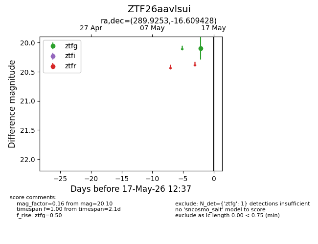
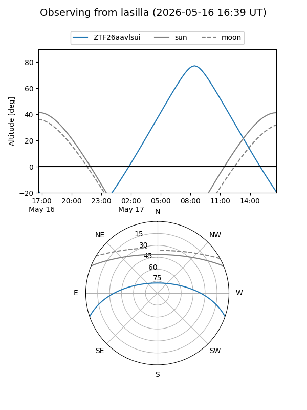
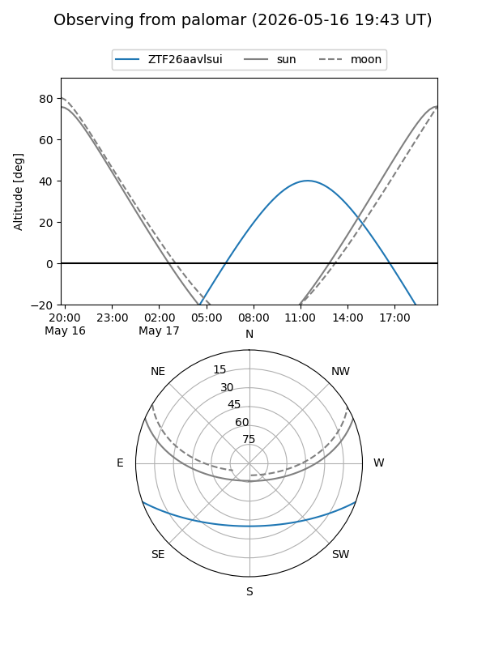

ZTF26aavlsui
Target ZTF26aavlsui at 2026-05-17 12:39
Aliases and brokers:
FINK: link
Lasair: link
ALeRCE: link
alt names
ZTF26aavlsui (ztf,fink_ztf)
Coordinates:
equatorial (ra, dec) = 289.9253,-16.60943
equatorial (HMS+DMS) = 19:19:42.07,-16:36:33.94
galactic (l, b) = (21.0179,-13.60638)
Flags:
Photometry:
last ztfg=20.10
1 ztfg detections
Lightcurve

Visibility


Additional plots